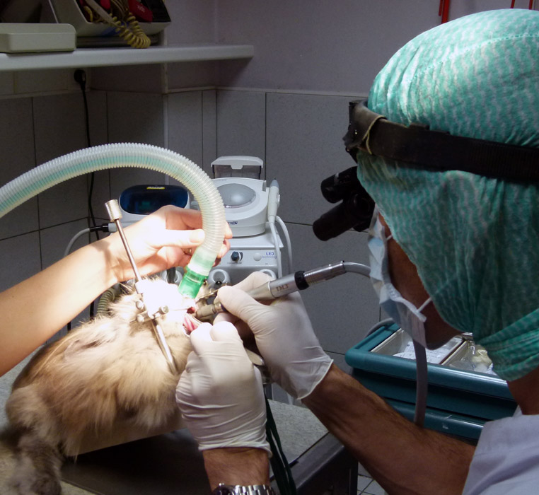

UN VÉTÉRINAIRE COMPÉTENT EN DENTISTERIE À VOTRE DISPOSITION
La clinique a développé depuis plusieurs années une unité de dentisterie permettant de soigner les dents de
votre compagnon. Cette unité ne se limite pas à l’hygiène buccodentaire. Elle prend en charge toutes les
pathologies buccodentaires ainsi que la chirurgie maxillofaciale.
UNE UNITÉ DE DENTISTERIE COMPLÈTE
La clinique dispose d’un bloc dentaire complet permettant les traitements dentaires des animaux comme le ferait
pour vous votre compétent en dentisterie :
Compresseur
Turbines
Moteur
Détarteur(2modéles)
Arsenal permettant le traitement de caries simples ou complexes avec dévitalisation et comblement de canaux
Radiographie dentaire numérisée

LES MALADIES PRISES EN CHARGE
les maladies dentaires strictes: carie,détartrage,fracture dentaire,pathologies de racine dentaire